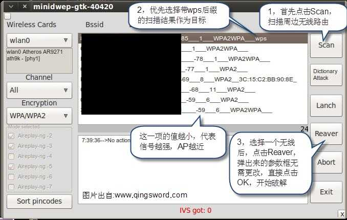
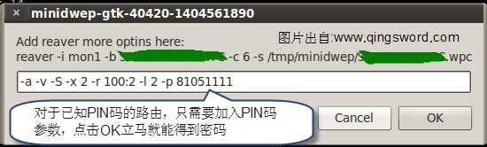

[wifi]无线路由密码破解与防范
引言
如今，无线wifi的使用让上网变得非常方便，无需在固定的地方随时随地都能接入互联网，我们在享受无线wifi带给我们方便的同时，无线路由的安全也受到了考验；这篇文章给大家演示几种无线路由密码破解方法，与此同时，针对不同的方法给出相应的防范策略。
本文假设读者是拥有Linux基础的，所以不会对Linux的基本操作有过多的解释，同时，读者也需要对VMware的使用有一定的了解。
文章目录
0×1.利用wifi万能钥匙接入无线路由
前些天在外面玩的时候，朋友很神秘的拿出他的android系统手机，说是能秒连WPA加密的WiFi，当时我不是很相信。在我的印象中暴力破解非常费时，何况是手机系统。
带着将信将疑的态度，看他拿着手机转悠了一会（当时在商场，无线WiFi也多），然后他小声对我说："连上了"，我心中一惊，抢过手机研究了一下，发现确实是连上了某个WPA2加密AP，用到的软件就是"WiFi万能钥匙"。
"WiFi万能钥匙"拥有多个版本，能安装在手机android系统，ios系统，苹果mac以及windows上，它首先需要利用手机或者电脑的网络连接到服务器数据库，在那个数据库中储存了全国各地的无线wifi的信息（路由识别码和密码）。
这些信息可能是别人连接或破解了一个WiFi后，手动分享到数据库的；有些是因为自己安装了这个软件，而在安装时有一行可选的小字，大致的意思是是否分享现在你连接的这个WiFi，如果一直是默认的下一步安装，就直接将自己的WiFi也分享到了数据库中；甚至不排除软件本身在安装好后，自动窃取连接的无线wifi的密码保存在数据库中。
说到这里大家可能明白了，为什么手机安装这个软件后能秒破无线WiFi。因为恰巧，那个无线WiFi信息在以前的某个时间点，被人分享到了"WiFi万能钥匙"数据库中。
对于"WiFi万能钥匙"，如果是在自家WiFi下载安装，一定要留意安装过程中那个默认勾选的"自动分享"选项，否则会将自己的WiFi也分享出去。
软件的使用很简单，一键扫描后，所有带锁的都是能够连上的（除非这个AP后来更改过密码），就不多做介绍了，想研究的朋友可以去试试。
0×2.利用pin码破解无线路由WPA2加密
这是目前，针对WPA加密破解成功率最高的一种方法，用这种方法破解出来的WiFi一般质量都很高，不会像第一节说的那种，很多人都能连上使用；唯一的局限性就是，目标无线路由必须开启WPS功能（通俗点说就是能够被pin）。
1）需要准备的工具：
一台安装了VMware的计算机；
下载CDLinux的iso文件（集成了minidwep等工具的Linux精简版系统）：[CDLinux官方网站]；
一个外置的Usb无线网卡（因为CDLinux在VMware虚拟机中运行是不能识别物理机的无线网卡的，必须是第三方Usb无线网卡才可以识别，如果你可以将CDLinux制作成Usb启动盘，并且用U盘启动就无需这个装备了，因为CDLinux和其他发行版的Linux不同，需要手动构建引导文件，文字君不想折腾了QAQ，求放过）；
2）使用cdlinux的iso文件启动虚拟机并且将外接的usb无线网卡设备切换到虚拟机中，进入cdlinux系统后能在右下方网络图标中利用这个外接的usb无线网卡搜索到周边信号，就可以进行下一步操作了。
3）打开终端，输入ifconfig查看外接usb设备号（一般都是wlan0），确定设备号后，启用无线网卡监听
#使用airmon-ng启动无线网卡监听 qing@qingsword.com:~$ sudo airmon-ng start wlan0 #启动minidwep，启动时会弹出一个警告窗口，点击OK即可（或直接双击桌面上的minidwep-gtk） qing@qingsword.com:~$ minidwep-gtk
一般破解时间以目标pin值而定，pin值是一个贴在路由背面的8位整数（可以在路由器"QSS安全设置"中更改），破解时间以数值大小来定，按照默认的排序从小到大，一般2开头的大概3~4小时，如果是9开头的，那可能需要花10~30个小时。如果在弹出来的窗口中pin一直没有动，就说明这个路由是防pin的，不能使用这种方法破解。
这里有个小技巧，选择一个无线目标后，点击软件的"排序pin码"（Sort pincodes）按钮可以设置从几开始pin，现在一般的路由pin都是从中间开始的，所以建议设置成3576482910,这样就会从3开始pin，一直pin到0（文字君曾经遇到过这样设置后，结果运行了三天，pin居然是从0开始的QAQ，所以有一定的运气成分）。
当软件pin到正确的值后，会弹出一个对话框，类似下面这样：
[+] WPS PIN: "81051111" #这个无线的pin值
[+] WPA PSK: "12345678" #连接密码12345678
[+] AP SSID: "TP-LINK_hello" #无线名称
[+] AP MAC : cc:1e:4f:ff:d5:ba #无线MAC地址
建议记住AP MAC对应的PIN值，这样就算以后目标更改了WiFi的名称和密码也没关系，虽然名称更改了，但可以在扫描结果中通过MAC地址判断是不是以前跑出来的那个WiFi，只需要重新使用这个pin值一次，选择目标点击Reaver后，在弹出的参数框中加入-p 81051111，如下：
对于PIN码猜解的防范：
尽可能不要去使用老无线路由，因为一些老的无线路由虽然没有开启wps功能，但是仍然能够被pin，对于新无线路由，以TP-LINK为例，进入路由管理页面后，找到"QSS安全设置"，点击"关闭QSS"，这样PIN码就失去作用了。
总结：Pin码猜解非常的费时间，但只要目标路由是能够被pin的，那么这种方法成功率几乎100%。